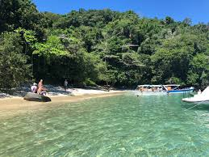
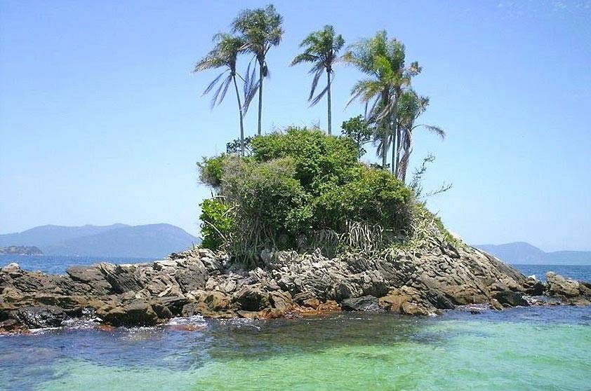
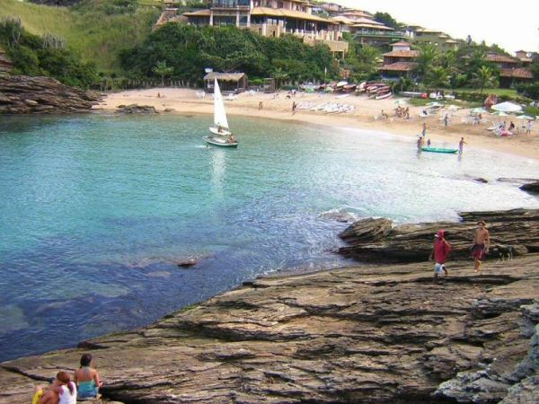
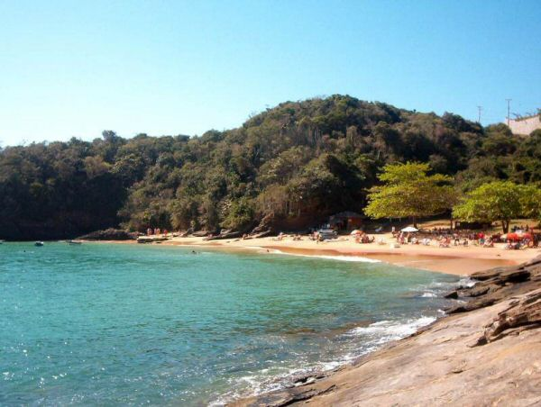
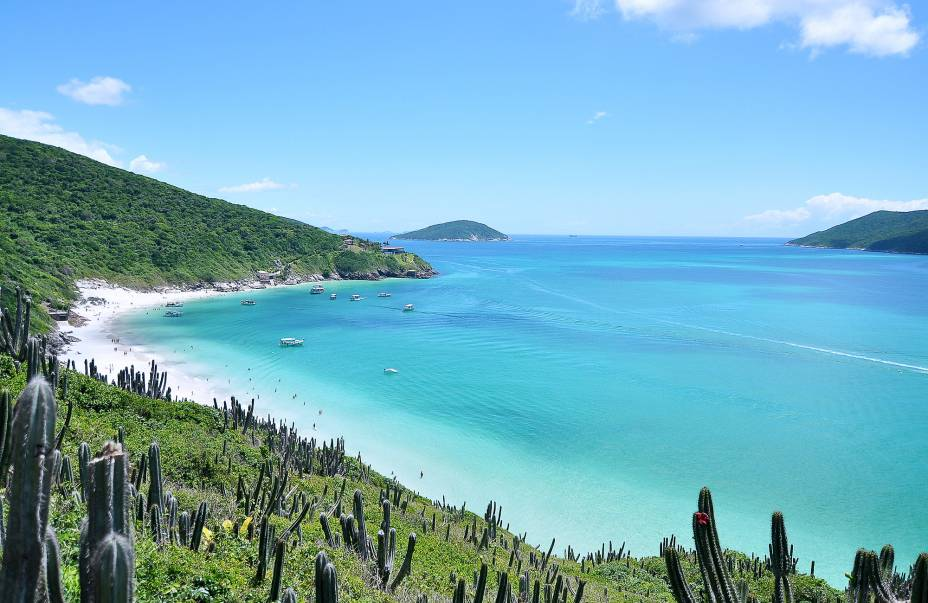
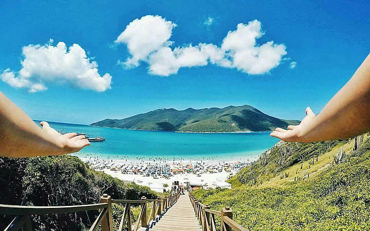
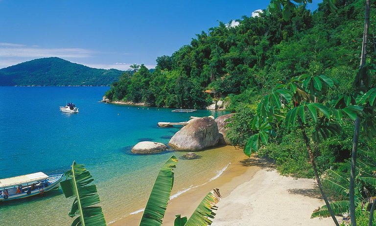
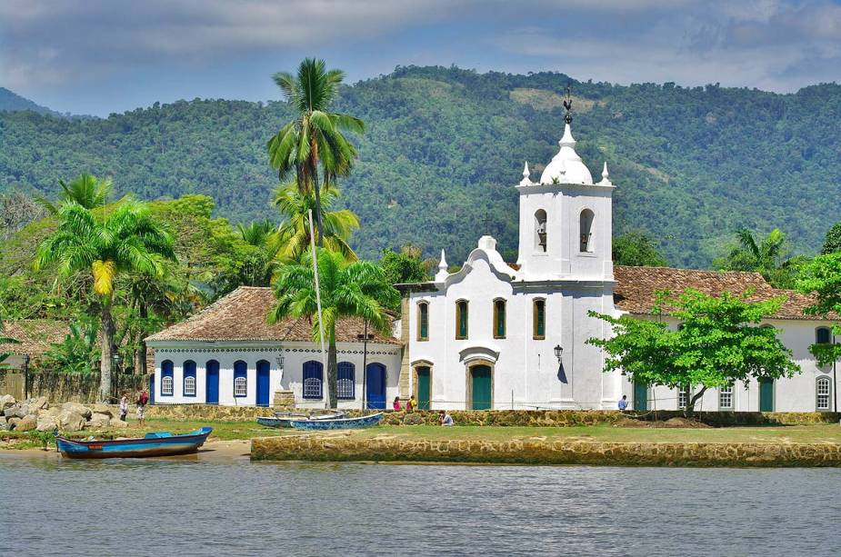
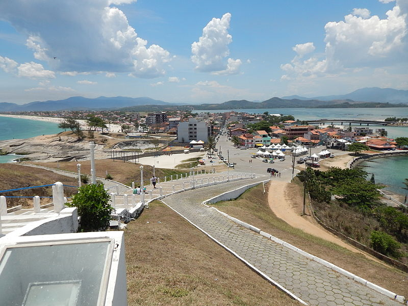
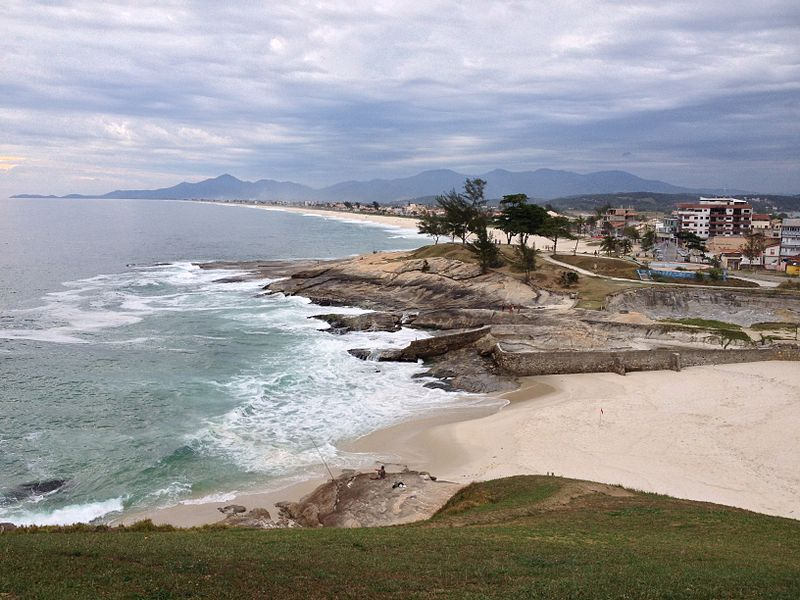

Angra dos Reis
Angra dos Reis tem 365 ilhas, com mar verde-água, areia branquinha e vegetação de Mata Atlântica – a mais ilustre delas é a Ilha Grande. Por causa disso, a cidade adaptou-se a uma vida insular, em que as ilhas são uma espécie de extensão dos bairros: a Gipoia é boa para badalação durante o dia, Itanhangá durante a noite, e por ai vai. No continente, entretanto, o cenário não é tão paradisíaco (há favelas e bairros com infraestrutura precária), o que faz com que pouca gente ouse explorar a região. Mas vale conhecer a pracinha do Mercado de Peixe e o Museu de Arte Sacra.
 Armação de Búzios
Armação de Búzios, ou simplesmente Búzios, é a mais badalada cidade da Região dos Lagos fluminense e fica a cerca 175 km do Rio de Janeiro. Atualmente, é a segunda cidade mais visitada do estado, atraindo turistas de todos os cantos do mundo durante todo o ano, em busca das melhores praias de Búzios.
 Arraial do Cabo
Há cerca de um milhão de anos os ventos, as correntes marítimas e as marés começaram a depositar sedimentos entre três antigas ilhas – atualmente conhecidas como morro do Mirante, do Forno e Pontal do Atalaia -, incorporando-as ao continente e formando, assim, o cabo onde se situa a cidade.
 Paraty
Batizada com o nome de um peixe local, Paraty fica na costa sudeste do Brasil, 200 quilômetros ao sul do Rio, com a Serra da Bocaina ao fundo. O centro da pequena cidade colonial é um monumento histórico nacional com prédios bem preservados em suas ruas de pedestres. Saia de barco pela baía até as inúmeras ilhas e enseadas próximas. Explore plantações de cana-de-açúcar e caminhe ou pegue um trem através da mata atlântica. Fique de olho nos macacos que circulam pelas ruas de pedra.
 Saquarema
Em 1530, D. João III, rei de Portugal, reconhecendo que o sistema de “excursões” para guardar as costas do Brasil exigia grandes sacrifícios e não apresentava resultados satisfatórios, devido a falta de pontos onde se pudesse atracar com as embarcações para provê-las de mantimentos e homens, resolveu fundar uma colônia nas margens do Rio da Prata. Para isso organizou uma frota com duas naus, um galeão e duas caravelas e uma tripulação de aproximadamente 400 pessoas e tendo como comandante, Martim Afonso de Souza, com poderes extraordinários concedidos por D. João III através de uma carta Régia datada de 20 de novembro de 1530. Dentre tais poderes destacava-se o de tomar posse e colocar marcos em todo o território até a linha demarcada.
 